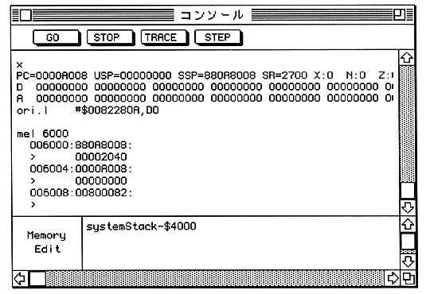

Description Write data expr2 to address expr1. Each MEB MEW MEL command Byte, word, and longword are written, and the default write size is Change to word, word, longword. The ME command is executed with the default write size.
Description Perform interactive memory editing from address expr1. MEB MEW MEL command is it Each byte, word, and longword are written, and the default write size To byte, word, longword. The ME command is executed with the default write size. During interactive editing, the following prompt appears in the input area of the console window: Will be.

● To end interactive editing, enter the string "/" or ".". ● You can return to the previous address by entering the string "^" or "-". to come. ● If you enter an empty string, the next address is not changed without changing the current address. You can go to less.